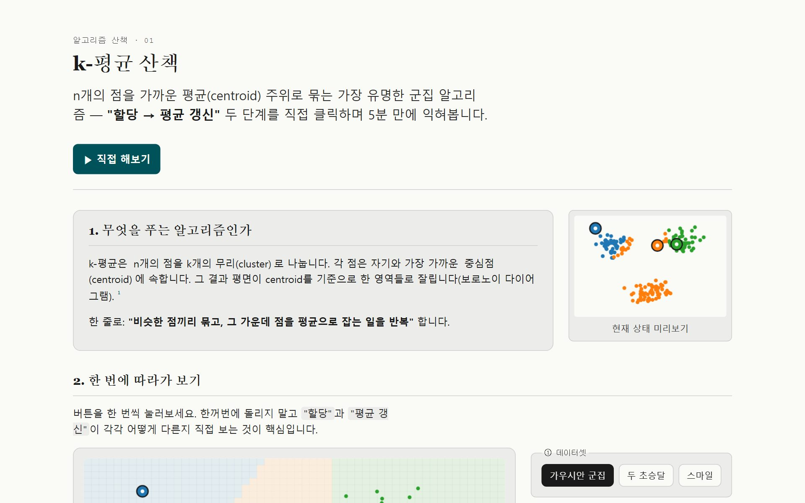
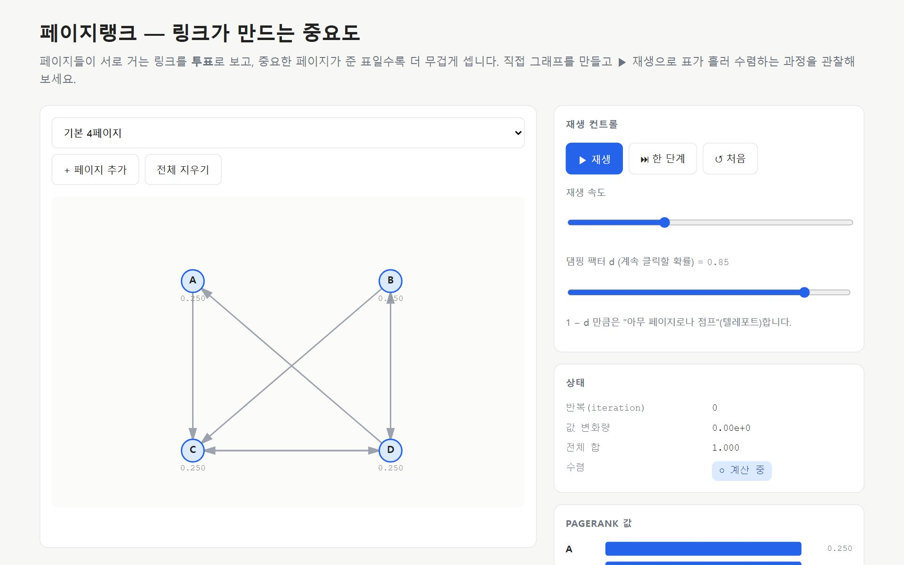
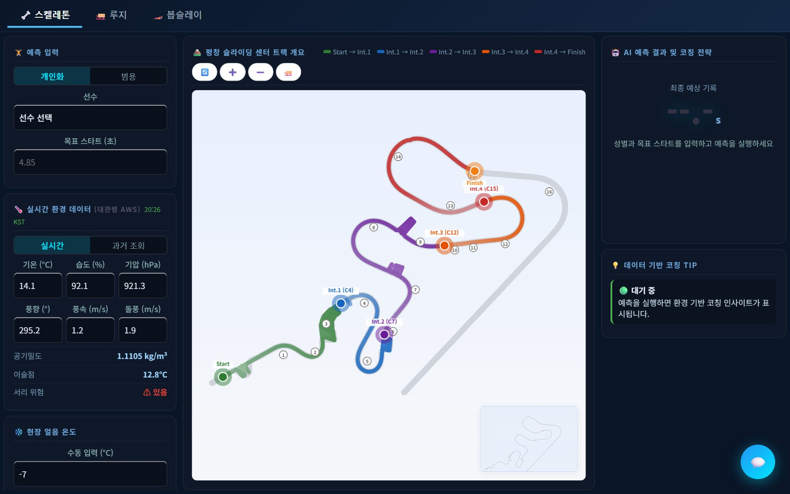

영업 DB와 견적 자동화
변압기 영업 데이터를 정리해 데이터베이스를 구축하고, 견적 생성을 자동화했습니다. 견적·수주 업무를 AI가 보조하는 체계도 만들었습니다.
직접 제작한 학습용 웹 튜토리얼입니다.
모두 라이브로 동작하며, 알고리즘·온톨로지·리팩터링 원리를 직접 조작하며 익히도록 설계했습니다.





AI 부트캠프 과정에서 팀으로 개발·배포한 프로젝트입니다. 각 프로젝트의 소스 코드를 GitHub에 공개합니다.



지난 11년간 빌딩 HMI 엔지니어로서 코엑스 등 대한민국을 대표하는 랜드마크 현장을 담당했습니다.
2023년 LLM 흐름을 마주하며 (주)에스티엔비 재직 중 회사의 AX 전환에 기여했고, 2025년에는 AI 기반 소프트웨어 개발로 영역을 넓혔습니다.
국비지원 AI 엔지니어 양성 과정을 전 과제 1등으로 수료한 뒤, 2026년 (주)디에이치아이에스의 AX 프로젝트를 수탁해 변압기 영업 DB·견적 자동화·수출 업무 AI화를 실제 기업 현장에 적용했습니다.